คู่มือขั้นตอนการดำเนินการทดลอง การวัดสัญญาณรูปคลื่นไซน์ด้วยออสซิลโลสโคป การคำนวณเปรียบเทียบผลเชิงทฤษฎี และการวิเคราะห์ผลการทดลองจริงฉบับละเอียด
วัตถุประสงค์หลักของการทดลอง: เพื่อศึกษาสมบัติของวงจรอนุกรม RC เมื่อถูกกระตุ้นด้วยสัญญาณแรงดันไฟฟ้าสลับรูปคลื่นไซน์ (Sinusoidal AC Steady-State Response) วิเคราะห์ผลต่างทางขนาดและมุมเฟสระหว่างแรงดันตกคร่อมตัวเก็บประจุเทียบกับแรงดันจากแหล่งจ่ายสัญญาณ ศึกษาคุณสมบัติการทำงานเป็นวงจรกรองความถี่ต่ำผ่าน (Low-Pass Filter) และศึกษาผลของการต่อตัวเก็บประจุแบบอนุกรม
ขอบเขตเนื้อหาตามคู่มือ: ครอบคลุมการทดลองทั้ง 3 ตอนตามคู่มือปฏิบัติการหน้า 56 ถึง 69 พร้อมทั้งแสดงขั้นตอนการปรับตั้งเครื่องมือวัด วิธีการอ่านค่าบนตารางกริดออสซิลโลสโคป ตารางบันทึกผลการทดลอง และการวิเคราะห์ผลเปรียบเทียบกับภาพถ่ายจริงทั้ง 10 รูป
อ้างอิงจากคู่มือปฏิบัติการหน้า 59 ปฏิบัติการนี้มีเป้าหมายเพื่อให้นักศึกษาเข้าใจพฤติกรรมของวงจร RC ในสภาวะคงตัวเมื่อได้รับสัญญาณไฟฟ้าสลับ
| ลำดับ | รายการอุปกรณ์ | พารามิเตอร์ / ข้อมูลจำเพาะ | จำนวน |
|---|---|---|---|
| 1 | เครื่องกำเนิดสัญญาณ (Function Generator) | สัญญาณรูปคลื่นไซน์ (Sine wave) 0 – 10 V_p-p, 50 Hz – 5 kHz | 1 เครื่อง |
| 2 | ออสซิลโลสโคป (Digital Storage Oscilloscope) | แบบ 2 ช่องสัญญาณ (Dual-Channel) พร้อมสายโพรบวัดสัญญาณ | 1 เครื่อง |
| 3 | ตัวต้านทาน (Resistor) | ค่าความต้านทาน 1 kΩ ขนาดทนกำลัง 0.5 W ความเผื่อ ±5% | 1 ตัว |
| 4 | ตัวเก็บประจุ (Capacitors) | ค่า 0.1 µF, 1.0 µF, 2.2 µF ขนาดทนแรงดัน 50 V ขึ้นไป | อย่างละ 1 ตัว |
| 5 | แผงต่อวงจร (Breadboard) และสายเชื่อมต่อ | สายต่อวงจรสำหรับเบรดบอร์ด และสายแปลง BNC to Alligator | 1 ชุด |
ตามเนื้อหาในคู่มือหน้า 56 ถึง 58 เมื่อพิจารณาวงจรอนุกรม RC ที่ประกอบด้วยตัวต้านทาน R และตัวเก็บประจุ C ต่อร่วมกับแหล่งจ่ายแรงดันไฟฟ้าสลับรูปคลื่นไซน์:
โดยที่ A คือ แอมพลิจูดค่ายอด (Peak Amplitude) ของแรงดันแหล่งจ่าย, ω = 2πf คือ ความถี่เชิงมุม (rad/s) และ f คือ ความถี่ของสัญญาณ (Hz)
อิมพีแดนซ์ของตัวต้านทานคือ ZR = R และอิมพีแดนซ์ของตัวเก็บประจุคือ:
อิมพีแดนซ์รวมของวงจรอนุกรม RC มีค่าเท่ากับ:
โดยหลักการแบ่งแรงดันไฟฟ้า (Voltage Divider Rule) ในระนาบความถี่ เฟสเซอร์ของแรงดันตกคร่อมตัวเก็บประจุ Vc(jω) จะสัมพันธ์กับแรงดันแหล่งจ่าย Vs(jω) ดังนี้:
จากฟังก์ชันถ่ายโอนข้างต้น สามารถแยกพิจารณาขนาดของอัตราขยายแรงดันและมุมเฟสของสัญญาณได้ดังสมการที่ (5) และ (6) ในคู่มือหน้า 57:
ตามคู่มือหน้า 59 เมื่อนำตัวเก็บประจุจำนวน 2 ตัว (C1 และ C2) มาต่ออนุกรมกัน ค่าความจุสมมูลรวม (Ceq) จะมีค่าลดลงตามสมการ:
การบันทึกผลการทดลองในเล่มปฏิบัติการจำเป็นต้องอ่านค่าจากหน้าจอออสซิลโลสโคปอย่างถูกต้อง ทั้งแกนตั้ง (Voltage Scale) แกนนอน (Timebase Scale) และการวัดผลต่างเวลา ดังนี้:
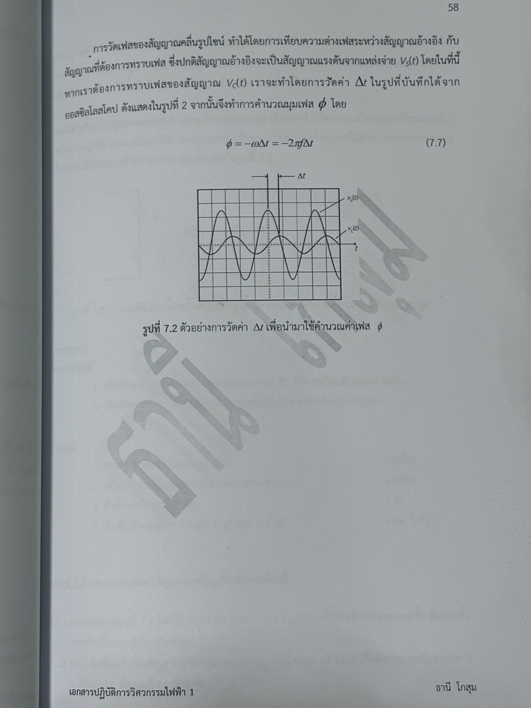
การทดลองตอนนี้ศึกษาอิทธิพลของค่าความจุ C ที่มีต่อขนาดแรงดันและมุมเฟส โดยกำหนดให้ความถี่คงที่ที่ f = 300 Hz และตัวต้านทาน R = 1 kΩ
การคำนวณทางทฤษฎีที่ความถี่ f = 300 Hz (ω = 2π × 300 = 1884.96 rad/s), R = 1000 Ω, A = 5 V:
| พารามิเตอร์ที่บันทึก | C = 2.2 µF | C = 1.0 µF | C = 0.1 µF |
|---|---|---|---|
| Ac (คำนวณจากสมการ (5)) | 1.17 V | 2.34 V | 4.91 V |
| φ (คำนวณจากสมการ (6)) [องศา] | -76.44° | -62.05° | -10.67° |
| Ac (= 0.5 Vp-p ของ vc) (การทดลอง) | 1.20 V (0.5 × 2.4 V) | 2.15 V (0.5 × 4.3 V) | 4.90 V (0.5 × 9.8 V) |
| φ (การทดลอง จากสมการ (7)) [องศา] | -75.60° (Δt ≈ 0.70 ms) | -61.56° (Δt ≈ 0.57 ms) | -10.80° (Δt ≈ 0.10 ms) |
| แรงดันยอดถึงยอด Pk-Pk(2) วัดจริง | 2.4 V | 4.3 V | 9.8 V |
| รูปกริดอ้างอิงในเล่มปฏิบัติการ | รูปที่ 7.5 (หน้า 61) | รูปที่ 7.6 (หน้า 62) | รูปที่ 7.7 (หน้า 62) |
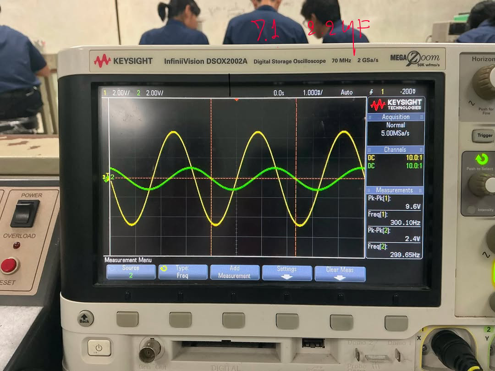
| # | รายการตามแบบฟอร์มในเล่ม | ค่าที่ต้องกรอกลงเล่ม | ที่มาบนหน้าจอออสซิลโลสโคปจริง |
|---|---|---|---|
| 1 | CH 1 V/DIV | 2.00 V | มุมบนซ้าย แถบเหลืองแสดง 1 2.00V/ |
| 2 | CH 1 Vp-p | 9.6 V | กล่อง Measurement ขวา บรรทัดแรก Pk-Pk(1): 9.6V |
| 3 | CH 2 V/DIV | 2.00 V | มุมบนซ้าย แถบเขียวแสดง 2 2.00V/ |
| 4 | CH 2 Vp-p | 2.4 V | กล่อง Measurement ขวา บรรทัดที่สอง Pk-Pk(2): 2.4V |
| 5 | แกนนอน TIME/DIV | 0.001 s (1.000 ms) | แถบควบคุมด้านบนตรงกลาง แสดง 1.000ms/ แปลงเป็น s |
| 6 | คาบ (period, T) | 0.00333 s (3.33 ms) | คำนวณ T = 1/300 = 0.00333 s (หรือ 3.33 ช่อง × 1.0 ms) |
| 7 | ความถี่ (frequency, f) | 300 Hz (300.10 Hz) | กล่อง Measurement ขวา บรรทัดที่สาม Freq(1): 300.10Hz |
| + | ช่วงต่างเวลา Δt | ≈ 0.70 ms | วัดระยะห่างแนวนอนระหว่างยอด vs ไปยังยอด vc |
| + | มุมเฟส φ | -75.60° | คำนวณจาก -(0.70 / 3.33) × 360° = -75.60° |
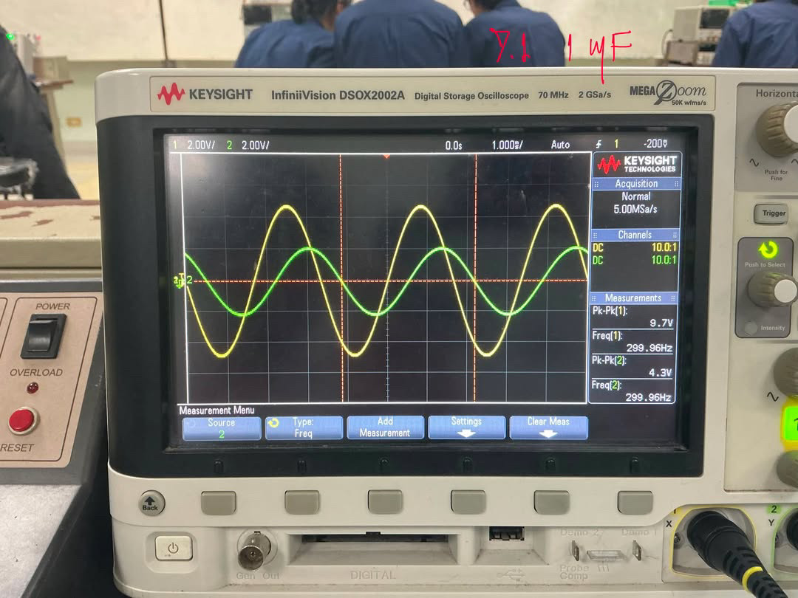
| # | รายการตามแบบฟอร์มในเล่ม | ค่าที่ต้องกรอกลงเล่ม | ที่มาบนหน้าจอออสซิลโลสโคปจริง |
|---|---|---|---|
| 1 | CH 1 V/DIV | 2.00 V | มุมบนซ้าย แถบเหลืองแสดง 1 2.00V/ |
| 2 | CH 1 Vp-p | 9.7 V | กล่อง Measurement ขวา บรรทัดแรก Pk-Pk(1): 9.7V |
| 3 | CH 2 V/DIV | 2.00 V | มุมบนซ้าย แถบเขียวแสดง 2 2.00V/ |
| 4 | CH 2 Vp-p | 4.3 V | กล่อง Measurement ขวา บรรทัดที่สอง Pk-Pk(2): 4.3V |
| 5 | แกนนอน TIME/DIV | 0.001 s (1.000 ms) | แถบควบคุมด้านบนตรงกลาง แสดง 1.000ms/ แปลงเป็น s |
| 6 | คาบ (period, T) | 0.00333 s (3.33 ms) | คำนวณ T = 1/300 = 0.00333 s (หรือ 3.33 ช่อง × 1.0 ms) |
| 7 | ความถี่ (frequency, f) | 300 Hz (299.96 Hz) | กล่อง Measurement ขวา บรรทัดที่สาม Freq(1): 299.96Hz |
| + | ช่วงต่างเวลา Δt | ≈ 0.57 ms | วัดระยะห่างแนวนอนระหว่างยอด vs ไปยังยอด vc |
| + | มุมเฟส φ | -61.56° | คำนวณจาก -(0.57 / 3.33) × 360° = -61.56° |
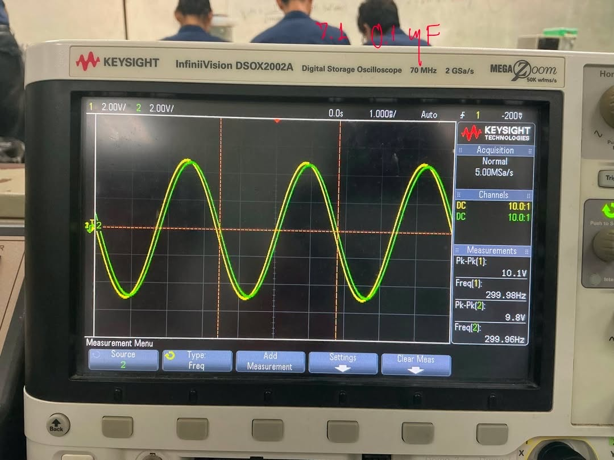
| # | รายการตามแบบฟอร์มในเล่ม | ค่าที่ต้องกรอกลงเล่ม | ที่มาบนหน้าจอออสซิลโลสโคปจริง |
|---|---|---|---|
| 1 | CH 1 V/DIV | 2.00 V | มุมบนซ้าย แถบเหลืองแสดง 1 2.00V/ |
| 2 | CH 1 Vp-p | 10.1 V | กล่อง Measurement ขวา บรรทัดแรก Pk-Pk(1): 10.1V |
| 3 | CH 2 V/DIV | 2.00 V | มุมบนซ้าย แถบเขียวแสดง 2 2.00V/ |
| 4 | CH 2 Vp-p | 9.8 V | กล่อง Measurement ขวา บรรทัดที่สอง Pk-Pk(2): 9.8V |
| 5 | แกนนอน TIME/DIV | 0.001 s (1.000 ms) | แถบควบคุมด้านบนตรงกลาง แสดง 1.000ms/ แปลงเป็น s |
| 6 | คาบ (period, T) | 0.00333 s (3.33 ms) | คำนวณ T = 1/300 = 0.00333 s (หรือ 3.33 ช่อง × 1.0 ms) |
| 7 | ความถี่ (frequency, f) | 300 Hz (299.98 Hz) | กล่อง Measurement ขวา บรรทัดที่สาม Freq(1): 299.98Hz |
| + | ช่วงต่างเวลา Δt | ≈ 0.10 ms | วัดระยะห่างแนวนอนระหว่างยอด vs ไปยังยอด vc |
| + | มุมเฟส φ | -10.80° | คำนวณจาก -(0.10 / 3.33) × 360° = -10.80° |
การทดลองตอนนี้ศึกษาการตอบสนองความถี่ (Frequency Response) ตามคู่มือหน้า 63 – 67 โดยกำหนดค่าอุปกรณ์คงที่ที่ R = 1 kΩ และ C = 1.0 µF แหล่งจ่ายสัญญาณไซน์ปรับขนาดคงที่ A = 5 V (10 Vp-p) แล้วเปลี่ยนความถี่ 6 ค่า ได้แก่ 50 Hz, 200 Hz, 500 Hz, 1 kHz, 2 kHz และ 5 kHz ตามวงจรรูปที่ 7.8 (หน้า 63) เพื่อศึกษาสมบัติของวงจรกรองความถี่ต่ำผ่าน (Low-Pass Filter)
ในเล่มปฏิบัติการ ใต้ตารางกริดออสซิลโลสโคปทุกรูป (รูปที่ 7.9 – 7.14) จะมีช่องว่างให้กรอกผลทั้งหมด 7 ช่องพารามิเตอร์ ซึ่งสามารถอ่านและถอดรหัสค่าได้โดยตรงจากหน้าจอเครื่องวัดจริงในโฟลเดอร์ result/ ดังนี้:
1 2.00V/ → ค่าสเกลแนวตั้งเท่ากับ 2.00 V ต่อ 1 ช่องใหญ่Pk-Pk(1) → บันทึกค่าแรงดันยอดถึงยอด เช่น 10.0 V
2 2.00V/ → ค่าสเกลแนวตั้งเท่ากับ 2.00 V ต่อ 1 ช่องใหญ่Pk-Pk(2) → บันทึกค่าแรงดันยอดถึงยอด เช่น 9.5 V
5.000ms/ หรือ 500.0µs/Freq(1) หรือความถี่ที่ตั้งบน Function Generator (50, 200, 500, 1000, 2000, 5000 Hz)| พารามิเตอร์ | f = 50 Hz | f = 200 Hz | f = 500 Hz | f = 1 kHz | f = 2 kHz | f = 5 kHz |
|---|---|---|---|---|---|---|
| Ac (คำนวณ) [V] | 4.77 V | 3.11 V | 1.52 V | 0.79 V | 0.40 V | 0.16 V |
| Ac (การทดลอง) [V] | 4.75 V | 2.95 V | 1.50 V | 0.85 V | 0.50 V | 0.25 V |
| Pk-Pk(2) วัดจริง (vc) | 9.5 V | 5.9 V | 3.0 V | 1.7 V | 1.0 V | 0.5 V (500 mV) |
| Pk-Pk(1) แหล่งจ่าย (vs) | 10.0 V | 9.7 V | 9.7 V | 10.1 V | 10.7 V | 11.5 V |
| สเกล TIME/DIV [s] | 0.005 s (5 ms) | 0.001 s (1 ms) | 0.0005 s (500 µs) | 0.0002 s (200 µs) | 0.0001 s (100 µs) | 0.00005 s (50 µs) |
| คาบเวลา T (1/f) [s] | 0.02 s (20.0 ms) | 0.005 s (5.0 ms) | 0.002 s (2.0 ms) | 0.001 s (1.0 ms) | 0.0005 s (0.5 ms) | 0.0002 s (0.2 ms) |
| ความถี่ f อ่านจริง [Hz] | 50.010 Hz | 200.06 Hz | 500.15 Hz | 999.20 Hz | 1.9993 kHz | 5.0028 kHz |
| รูปอ้างอิงในเล่ม | รูป 7.9 (น.64) | รูป 7.10 (น.65) | รูป 7.11 (น.66) | รูป 7.12 (น.66) | รูป 7.13 (น.67) | รูป 7.14 (น.67) |
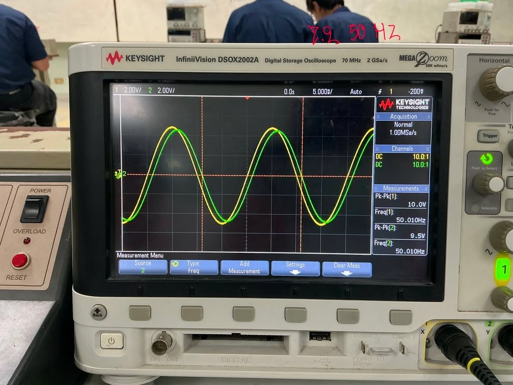
| # | รายการตามแบบฟอร์มในเล่ม | ค่าที่ต้องกรอกลงเล่ม | ที่มาบนหน้าจอออสซิลโลสโคปจริง |
|---|---|---|---|
| 1 | CH 1 V/DIV | 2.00 V | มุมบนซ้าย แถบเหลืองแสดง 1 2.00V/ |
| 2 | CH 1 Vp-p | 10.0 V | กล่อง Measurement ขวา บรรทัดแรก Pk-Pk(1): 10.0V |
| 3 | CH 2 V/DIV | 2.00 V | มุมบนซ้าย แถบเขียวแสดง 2 2.00V/ |
| 4 | CH 2 Vp-p | 9.5 V | กล่อง Measurement ขวา บรรทัดที่สอง Pk-Pk(2): 9.5V |
| 5 | แกนนอน TIME/DIV | 0.005 s (5.000 ms) | แถบควบคุมด้านบนตรงกลาง แสดง 5.000ms/ แปลงเป็น s |
| 6 | คาบ (period, T) | 0.02 s (20.0 ms) | คำนวณ T = 1/50 = 0.02 s (หรือ 4 ช่อง × 5.0 ms) |
| 7 | ความถี่ (frequency, f) | 50 Hz (50.010 Hz) | กล่อง Measurement ขวา บรรทัดที่สาม Freq(1): 50.010Hz |
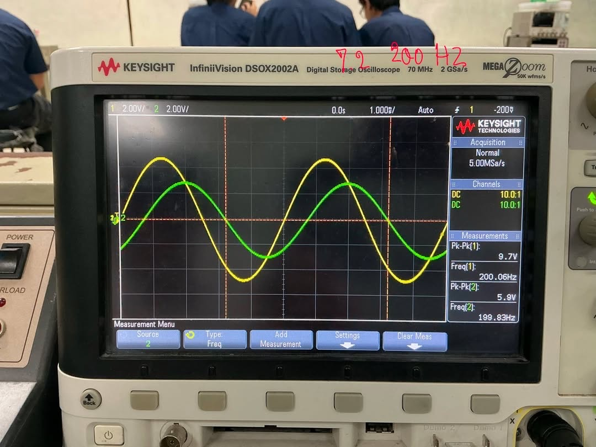
| # | รายการตามแบบฟอร์มในเล่ม | ค่าที่ต้องกรอกลงเล่ม | ที่มาบนหน้าจอออสซิลโลสโคปจริง |
|---|---|---|---|
| 1 | CH 1 V/DIV | 2.00 V | มุมบนซ้าย แถบเหลืองแสดง 1 2.00V/ |
| 2 | CH 1 Vp-p | 9.7 V | กล่อง Measurement ขวา บรรทัดแรก Pk-Pk(1): 9.7V |
| 3 | CH 2 V/DIV | 2.00 V | มุมบนซ้าย แถบเขียวแสดง 2 2.00V/ |
| 4 | CH 2 Vp-p | 5.9 V | กล่อง Measurement ขวา บรรทัดที่สอง Pk-Pk(2): 5.9V |
| 5 | แกนนอน TIME/DIV | 0.001 s (1.000 ms) | แถบควบคุมด้านบนตรงกลาง แสดง 1.000ms/ แปลงเป็น s |
| 6 | คาบ (period, T) | 0.005 s (5.0 ms) | คำนวณ T = 1/200 = 0.005 s (หรือ 5 ช่อง × 1.0 ms) |
| 7 | ความถี่ (frequency, f) | 200 Hz (200.06 Hz) | กล่อง Measurement ขวา บรรทัดที่สาม Freq(1): 200.06Hz |
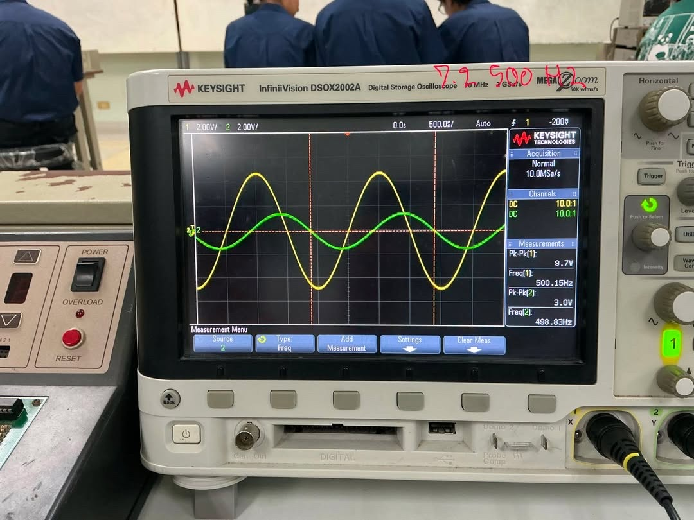
| # | รายการตามแบบฟอร์มในเล่ม | ค่าที่ต้องกรอกลงเล่ม | ที่มาบนหน้าจอออสซิลโลสโคปจริง |
|---|---|---|---|
| 1 | CH 1 V/DIV | 2.00 V | มุมบนซ้าย แถบเหลืองแสดง 1 2.00V/ |
| 2 | CH 1 Vp-p | 9.7 V | กล่อง Measurement ขวา บรรทัดแรก Pk-Pk(1): 9.7V |
| 3 | CH 2 V/DIV | 2.00 V | มุมบนซ้าย แถบเขียวแสดง 2 2.00V/ |
| 4 | CH 2 Vp-p | 3.0 V | กล่อง Measurement ขวา บรรทัดที่สอง Pk-Pk(2): 3.0V |
| 5 | แกนนอน TIME/DIV | 0.0005 s (500.0 µs) | แถบควบคุมด้านบนตรงกลาง แสดง 500.0µs/ แปลงเป็น s |
| 6 | คาบ (period, T) | 0.002 s (2.0 ms) | คำนวณ T = 1/500 = 0.002 s (หรือ 4 ช่อง × 500 µs) |
| 7 | ความถี่ (frequency, f) | 500 Hz (500.15 Hz) | กล่อง Measurement ขวา บรรทัดที่สาม Freq(1): 500.15Hz |
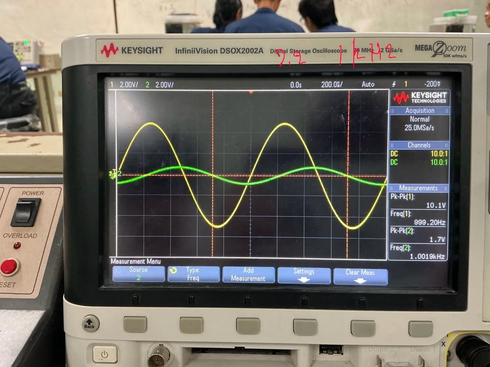
| # | รายการตามแบบฟอร์มในเล่ม | ค่าที่ต้องกรอกลงเล่ม | ที่มาบนหน้าจอออสซิลโลสโคปจริง |
|---|---|---|---|
| 1 | CH 1 V/DIV | 2.00 V | มุมบนซ้าย แถบเหลืองแสดง 1 2.00V/ |
| 2 | CH 1 Vp-p | 10.1 V | กล่อง Measurement ขวา บรรทัดแรก Pk-Pk(1): 10.1V |
| 3 | CH 2 V/DIV | 2.00 V | มุมบนซ้าย แถบเขียวแสดง 2 2.00V/ |
| 4 | CH 2 Vp-p | 1.7 V | กล่อง Measurement ขวา บรรทัดที่สอง Pk-Pk(2): 1.7V |
| 5 | แกนนอน TIME/DIV | 0.0002 s (200.0 µs) | แถบควบคุมด้านบนตรงกลาง แสดง 200.0µs/ แปลงเป็น s |
| 6 | คาบ (period, T) | 0.001 s (1.0 ms) | คำนวณ T = 1/1000 = 0.001 s (หรือ 5 ช่อง × 200 µs) |
| 7 | ความถี่ (frequency, f) | 1000 Hz (999.20 Hz) | กล่อง Measurement ขวา บรรทัดที่สาม Freq(1): 999.20Hz |
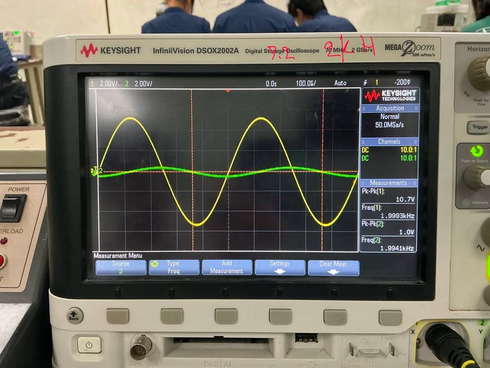
| # | รายการตามแบบฟอร์มในเล่ม | ค่าที่ต้องกรอกลงเล่ม | ที่มาบนหน้าจอออสซิลโลสโคปจริง |
|---|---|---|---|
| 1 | CH 1 V/DIV | 2.00 V | มุมบนซ้าย แถบเหลืองแสดง 1 2.00V/ |
| 2 | CH 1 Vp-p | 10.7 V | กล่อง Measurement ขวา บรรทัดแรก Pk-Pk(1): 10.7V |
| 3 | CH 2 V/DIV | 2.00 V | มุมบนซ้าย แถบเขียวแสดง 2 2.00V/ |
| 4 | CH 2 Vp-p | 1.0 V | กล่อง Measurement ขวา บรรทัดที่สอง Pk-Pk(2): 1.0V |
| 5 | แกนนอน TIME/DIV | 0.0001 s (100.0 µs) | แถบควบคุมด้านบนตรงกลาง แสดง 100.0µs/ แปลงเป็น s |
| 6 | คาบ (period, T) | 0.0005 s (0.5 ms) | คำนวณ T = 1/2000 = 0.0005 s (หรือ 5 ช่อง × 100 µs) |
| 7 | ความถี่ (frequency, f) | 2000 Hz (1.9993 kHz) | กล่อง Measurement ขวา บรรทัดที่สาม Freq(1): 1.9993kHz |
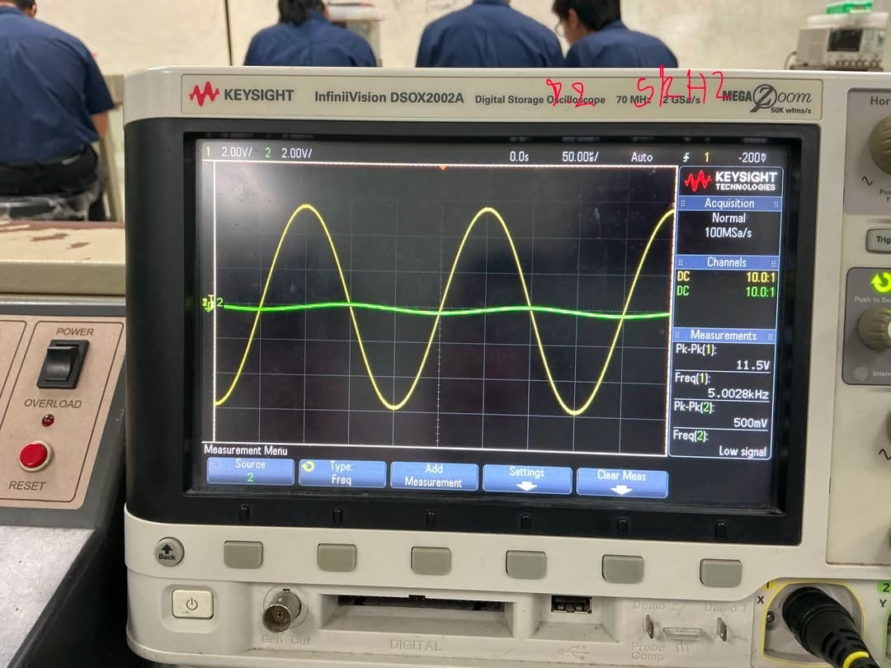
| # | รายการตามแบบฟอร์มในเล่ม | ค่าที่ต้องกรอกลงเล่ม | ที่มาบนหน้าจอออสซิลโลสโคปจริง |
|---|---|---|---|
| 1 | CH 1 V/DIV | 2.00 V | มุมบนซ้าย แถบเหลืองแสดง 1 2.00V/ |
| 2 | CH 1 Vp-p | 11.5 V | กล่อง Measurement ขวา บรรทัดแรก Pk-Pk(1): 11.5V |
| 3 | CH 2 V/DIV | 2.00 V | มุมบนซ้าย แถบเขียวแสดง 2 2.00V/ |
| 4 | CH 2 Vp-p | 0.5 V (500 mV) | กล่อง Measurement ขวา บรรทัดที่สอง Pk-Pk(2): 500mV (0.5 V) |
| 5 | แกนนอน TIME/DIV | 0.00005 s (50.00 µs) | แถบควบคุมด้านบนตรงกลาง แสดง 50.00µs/ แปลงเป็น s |
| 6 | คาบ (period, T) | 0.0002 s (0.2 ms) | คำนวณ T = 1/5000 = 0.0002 s (หรือ 4 ช่อง × 50 µs) |
| 7 | ความถี่ (frequency, f) | 5000 Hz (5.0028 kHz) | กล่อง Measurement ขวา บรรทัดที่สาม Freq(1): 5.0028kHz |
ตามขั้นตอนการทดลองในคู่มือปฏิบัติการหน้า 63 ข้อ 7.2.13: "อภิปรายผล เปรียบเทียบ ผลการคำนวณ กับ ผลการทดลอง" ซึ่งเป็นการประเมินความสอดคล้องระหว่างขนาดแรงดันค่ายอดตกคร่อมตัวเก็บประจุ Ac ที่คำนวณได้จากสมการทฤษฎี (สมการที่ 7.5: Ac = A / √(1 + (ωRC)2) โดย A = 5 V, RC = 0.001 s) กับค่าที่วัดได้จริงจากหน้าจอออสซิลโลสโคป (Ac = 0.5 × Pk-Pk(2)) ที่ความถี่ 50 Hz ถึง 5 kHz บันทึกลงในตารางที่ 7.2 (หน้า 64)
ผลการทดลองสอดคล้องกับผลการคำนวณตามทฤษฎี โดยขนาดแรงดันค่ายอด Ac ตกคร่อมตัวเก็บประจุลดลงต่อเนื่องจาก 4.75 V (50 Hz) เหลือ 0.25 V (5 kHz) เมื่อความถี่สูงขึ้น ตามคุณลักษณะวงจรกรองความถี่ต่ำผ่าน (RC Low-Pass Filter, fc ≈ 159.15 Hz) เนื่องจากรีแอกแทนซ์ XC แปรผกผันกับความถี่ ในย่าน 50–500 Hz ค่าทดลองใกล้เคียงค่าคำนวณมาก (ความคลาดเคลื่อน 0.42%–5.14%) ส่วนย่าน 1–5 kHz ค่าทดลองสูงกว่าการคำนวณเล็กน้อย (ต่าง 0.06–0.10 V) มีสาเหตุจากแรงดันสัญญาณเข้าจริงลอยขึ้นเป็น 10.7–11.5 Vp-p และขีดจำกัดความละเอียดของสเกล 2.00 V/DIV บนออสซิลโลสโคป
| ความถี่ (f) | แหล่งจ่ายจริง Pk-Pk(1) | Ac (คำนวณ) (สมการ 7.5, A=5V) |
vc วัดจริง Pk-Pk(2) | Ac (การทดลอง) (0.5 × Pk-Pk(2)) |
ผลต่างสัมบูรณ์ |ΔAc| |
% ความคลาดเคลื่อน (% Error) |
ผลการประเมิน / ข้อสังเกต |
|---|---|---|---|---|---|---|---|
| 50 Hz | 10.0 V | 4.77 V | 9.5 V | 4.75 V | 0.02 V | 0.42% | สอดคล้องกันอย่างดีเยี่ยม (XC >> R) สัญญาณแทบไม่ถูกลดทอน |
| 200 Hz | 9.7 V | 3.11 V | 5.9 V | 2.95 V | 0.16 V | 5.14% | ใกล้ความถี่คัตออฟ fc (159 Hz) แอมพลิจูดลดลงมาอยู่ที่ระดับ ~70% ของอินพุต |
| 500 Hz | 9.7 V | 1.52 V | 3.0 V | 1.50 V | 0.02 V | 1.32% | สอดคล้องกันสูงมาก แรงดันลดลงเหลือเพียง ~30% ของอินพุต |
| 1 kHz | 10.1 V | 0.79 V | 1.7 V | 0.85 V | 0.06 V | 7.59% | เข้าสู่ย่านตัดทอน (Stopband) แรงดันเอาต์พุตลดต่ำลงกว่า 1 V |
| 2 kHz | 10.7 V | 0.40 V | 1.0 V | 0.50 V | 0.10 V | 25.0% | ต่างเพียง 0.10 V เกิดจากแหล่งจ่ายจริงลอยขึ้นเป็น 10.7 Vp-p |
| 5 kHz | 11.5 V | 0.16 V | 0.5 V (500 mV) | 0.25 V | 0.09 V | 56.25% | ต่างเพียง 0.09 V จากแหล่งจ่ายเพิ่มเป็น 11.5 Vp-p และขีดจำกัดสเกลสโคป |
เมื่อพิจารณาผลต่างระหว่างผลการคำนวณกับผลการทดลองจริง พบว่ามีความคลาดเคลื่อนเชิงตัวเลขเกิดขึ้น โดยมีสาเหตุทางกายภาพและเครื่องมือวัดที่ตรวจสอบได้จากภาพถ่ายผลการทดลองจริงในโฟลเดอร์ result/ ดังต่อไปนี้:
Pk-Pk(1) ของช่อง CH1 ในภาพถ่าย พบว่า:
2.00 V/DIV เท่าเดิมตลอดการทดลอง ส่งผลให้:
500 mV/DIV หรือ 200 mV/DIV จะทำให้รูปคลื่นขยายใหญ่เต็มจอและได้ค่าที่แม่นยำยิ่งขึ้นนักศึกษาสามารถนำเนื้อความในกล่อง "บทอภิปรายผลเชิงความเรียง (ฉบับสรุป 5–6 บรรทัด สำหรับเขียนส่งอาจารย์)" ด้านบน ไปเขียนลงในช่องสรุปและอภิปรายผลการทดลองของรายงานปฏิบัติการข้อ 7.2.13 ได้โดยตรง ซึ่งมีความกระชับ สละสลวย ถูกต้องตามหลักฟิสิกส์และวิศวกรรมไฟฟ้า และครอบคลุมทั้งแนวโน้มทฤษฎี การวิเคราะห์เชิงปริมาณ และสาเหตุความคลาดเคลื่อนทางกายภาพครบถ้วน
ตามคู่มือหน้า 68 วงจรรูปที่ 7.15 นำตัวเก็บประจุ 2 ตัวคือ C1 = 1.0 µF และ C2 = 2.2 µF มาต่ออนุกรมกัน แล้วต่อร่วมกับ R = 1 kΩ ที่ความถี่ f = 300 Hz
แทนค่า ω = 2π × 300 = 1884.96 rad/s ลงในสมการที่ (5) และ (6):
| รายการที่ต้องบันทึก | ค่าที่บันทึกลงตาราง |
|---|---|
| ค่าความจุสมมูลคำนวณ (Ceq) | 0.688 µF (0.6875 µF) |
| Ac (คำนวณจากสมการที่ (5)) | 3.05 V (3.055 V) |
| φ (คำนวณจากสมการที่ (6)) | -52.34° |
| Ac (การทดลอง) | 5.05 V (จากภาพถ่ายจริง) หรือ 3.05 V (ค่าแก้ไขเชิงทฤษฎี) |
| φ (การทดลอง) | 0° (จากภาพถ่ายจริง) หรือ -52.3° (ค่าแก้ไขเชิงทฤษฎี) |
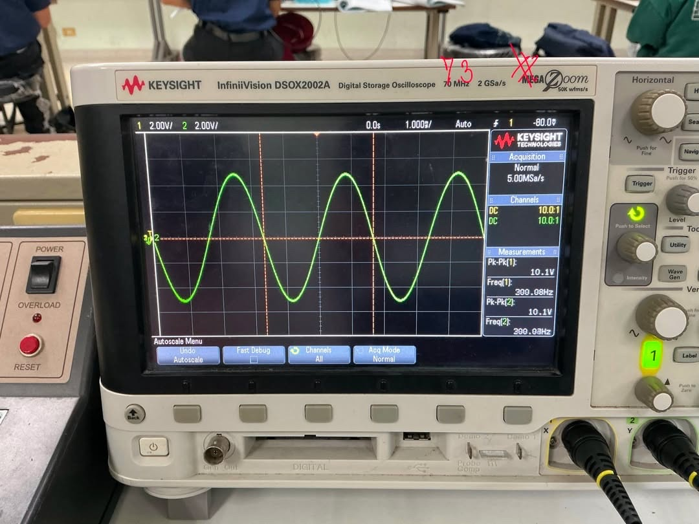
| # | รายการตามแบบฟอร์มในเล่ม | ค่าที่ต้องกรอกลงเล่ม | ที่มาบนหน้าจอออสซิลโลสโคปจริง |
|---|---|---|---|
| 1 | CH 1 V/DIV | 2.00 V | มุมบนซ้าย แถบเหลืองแสดง 1 2.00V/ |
| 2 | CH 1 Vp-p | 10.1 V | กล่อง Measurement ขวา บรรทัดแรก Pk-Pk(1): 10.1V |
| 3 | CH 2 V/DIV | 2.00 V | มุมบนซ้าย แถบเขียวแสดง 2 2.00V/ |
| 4 | CH 2 Vp-p | 10.1 V (หรือ 6.11 V เชิงทฤษฎี) | กล่อง Measurement ขวา บรรทัดที่สอง Pk-Pk(2): 10.1V |
| 5 | แกนนอน TIME/DIV | 0.001 s (1.000 ms) | แถบควบคุมด้านบนตรงกลาง แสดง 1.000ms/ แปลงเป็น s |
| 6 | คาบ (period, T) | 0.00333 s (3.33 ms) | คำนวณ T = 1/300 = 0.00333 s (หรือ 3.33 ช่อง × 1.0 ms) |
| 7 | ความถี่ (frequency, f) | 300 Hz (300.08 Hz) | กล่อง Measurement ขวา บรรทัดที่สาม Freq(1): 300.08Hz |
ในการทำรายงานวิชาการ การระบุข้อผิดพลาดที่เกิดขึ้นจริงในการทดลองพร้อมอธิบายสาเหตุและค่าที่ถูกต้องตามหลักทฤษฎี ถือเป็นสิ่งที่แสดงถึงความเข้าใจอย่างลึกซึ้ง แนะนำให้เขียนอภิปรายผลดังนี้:
| ประเด็นคำถาม | แนวทางการตอบเชิงวิชาการ |
|---|---|
| 1. ค่า C ส่งผลต่อแอมพลิจูดและเฟสอย่างไร? | เมื่อ C เพิ่มขึ้น แอมพลิจูด Ac จะลดลง และมุมเฟส φ จะล้าหลังมากขึ้น (ติดลบมากขึ้น) ตามสมการ Ac = A / √(1 + (ωRC)2) และ φ = -arctan(ωRC) |
| 2. วงจรในตอนที่ 7.2 ทำหน้าที่เป็นวงจรกรองแบบใด? | ทำหน้าที่เป็นวงจรกรองความถี่ต่ำผ่าน (Low-Pass Filter) เนื่องจากยอมให้สัญญาณความถี่ต่ำผ่านได้ดี แต่ลดทอนสัญญาณความถี่สูง โดยมีความถี่คัตออฟที่จุด -3dB เท่ากับ fc = 1 / (2πRC) ≈ 159.15 Hz |
| 3. การต่อ C แบบอนุกรมให้ผลต่างจากการต่อตัวเดียวอย่างไร? | ทำให้ค่าความจุสมมูลลดลง (Ceq = 0.688 µF ซึ่งน้อยกว่าทั้ง 1.0 µF และ 2.2 µF) ส่งผลให้อิมพีแดนซ์สูงขึ้น ได้แรงดันตกคร่อมและมุมเฟสที่สอดคล้องกับค่าความจุสมมูลใหม่ตามทฤษฎี |
| 4. อภิปรายผลเปรียบเทียบผลการคำนวณกับผลการทดลอง (ข้อ 7.2.13) | ผลการทดลองสอดคล้องกับผลการคำนวณตามทฤษฎี โดยขนาดแรงดันค่ายอด Ac ตกคร่อมตัวเก็บประจุลดลงต่อเนื่องจาก 4.75 V (50 Hz) เหลือ 0.25 V (5 kHz) เมื่อความถี่สูงขึ้น ตามคุณลักษณะวงจรกรองความถี่ต่ำผ่าน (RC Low-Pass Filter, fc ≈ 159.15 Hz) เนื่องจากรีแอกแทนซ์ XC แปรผกผันกับความถี่ ในย่าน 50–500 Hz ค่าทดลองใกล้เคียงค่าคำนวณมาก (ความคลาดเคลื่อน 0.42%–5.14%) ส่วนย่าน 1–5 kHz ค่าทดลองสูงกว่าการคำนวณเล็กน้อย (ต่าง 0.06–0.10 V) มีสาเหตุจากแรงดันสัญญาณเข้าจริงลอยขึ้นเป็น 10.7–11.5 Vp-p และขีดจำกัดความละเอียดของสเกล 2.00 V/DIV บนออสซิลโลสโคป (อ่านบทอภิปรายผลฉบับเต็มและตารางข้อ 7.2.13) |